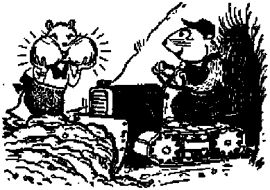

THE POPE PURGES HIS CHURCH Can fie sweep back the Red tide with the papal broom of excommunication?
Duncan Disgraced by Patriotic Folly Oklahoma town seeks to honor the flag by violating the principles for which it stands
Storing up food in summer to overcome hunger in winter
THE MISSION OF THIS JOURNAL
News sources that are able to keep you awake to the vital Issues of our times must be unfettered by censorship and selfish interests, "Awake 1” has no fetters. It recognizes facts, faces facts, is free to publish facts. It is not bound by political ambitions or obligations; it is unhampered by advertisers whose toes must not be trodden on; it is unprejudiced by traditional creeds. This journal keeps itself free that it may speak freely to you. But it does not abuse its freedom. It maintains integrity to truth.
"Awake I” uses the regular news channels, but is not dependent on them. Its own correspondents are on all continents, in scores of nations. From the four corners of the earth their uncensored, on-the*scenes reports come to you through these columns. This journal’s viewpoint is not narrow, but is international. It is read in many nations, in many languages, by persons of all ages. Through its pages many fields of knowledge pass in review—government, commerce, religion, history, geography, science, social conditions, natural wonders—why, its cover* age is as broad as the earth and as high as the heavens.
"Awake 1” pledges itself to righteous principles, to exposing hidden foes and subtle dangers, to championing freedom for all, to comforting mourners and strengthening those disheartened by the failures of a delinquent world, reflecting sure hope for the establishment of a righteous New World.
Get acquainted with ‘’Awake!” Keep awake by reading "Awake!”
Published Semimonthly By WATCHTOWER BIBLE AND TRACT SOCIETY, INC. 11T Adams Street Brooklyn 1, N. ¥., U.S.A.
N. H. Knqhb, Presiienf Gbant Suites, Reerefary
Plv« cent* a copy Ono dollar A year
fttalttinni should be Bent te ortta* la ymif aran-trj Jn compliiBCt with rtgulitlonj to EWanttt ufe drllTery of money. BemilUaai ire lecepted st Brcaldyo from couctries where m office la located, by imenmttotutl HOW J?Tder only, auteariptlrti rates in different countries ire here stated In local currency.
NMicf of expiration (will) renew*! blank) fe eeot nt Jrist two Issues before rabKriptitm expire*.
Chand* Ol iddtw when sent to our rfta may tx ttpecud effeeUfe within one month. fiiNd ymu <jld as well u mw rfdrew.
Orflces Yearly SubsttlDrion Bate
Amwltx, D.t„ 117 Aejams St., Brooklyn I, M.l. *1 AtiinllBi 11 Beresford Bd„ Btrathfleld, N.S.W. Bs Ga»nda, 40 Irwin Are., Toronto 5, Ontario fl Eli land. 34 CriTen Terrace, London, W. 2 fta SMth Afrit*, e33 Boston House, Cape Town 5s
Entered u aecond-tlua natter at Brooklyn, ft. Y.. Art vf Mird) 3, 16TB, Printed in U. 3. A
CONTENTS
The Pope Purges His Church The Papacy Pulls Its Punch Counterpunchea Subdue the Decree Lies and Smears Boomerang!
Meet Crusader MeGra th
Duncan Disgraced by Patriotic Folly Delinquency of Officials The Mobsters' Putsch
Real Patriots Speak Out
Wild Wisdom Outwits Winter Birds irith Wise Foresight Behold the Wisdom of the Ants I
3
4
5
6
7
8
8
9
10
12
13
14
Things io Consider in Home-building
Five-Percenters in the Government Pantry 20
"Thy Word Is Truth”
The Rock upon Which the Church Is Built 25
Catholic Censorship of WBBR Foiled
^'Now it is high time to awake."—Romans 13:11 ?/
Volume XXX
Brooklyn, N. Y., November &, 1949
Number 21
THE POPE PURGES HIS CHURCH
Catholicism has' fought Communism on many fronts. Its failure is evident in that it now fights for Its life on Its own home front. Will papal excommunication of Catholic Communists purge the pope’s church? Will It turn back the Red tide that now rises in the ranks of Catholicism? And if not, what will?
THOLICISM threw a desperation uneh at Communism when the pope excommunicated Catholics professing that political doctrine. Did the punch land? With force? With strpng follow-through t Did the Red fo$ go down? Stagger back? Or strike back? These questions find their answer in the aftermath of the papal decree against Communism issued on July 13. The official translation from Latin of the decree follows :
This Supreme Sacred Congregation of the Holy Office has been asked:
1. Whether it is lawful to enlist in or show favor to the Communist party?
2. Whether it is lawful to publish, read or disseminate books, newspapers, periodicals or leaflets in support of Communist doctrine and practice or write in them any articles?
3. Whether Catholics who knowingly and freely place actions as specified in Nos. 1 and 9 above may be admitted to the sacraments?
4. Whether Catholics, who profess and particularly those who defend and spread, the materialistic and anti-Christian, doctrine of the Communists, ipso facto, as apostates from the Catholic faith, incur excommunication reserved especially to the Holy See ?
The most eminent and reverend fathers, charged with the defense of matters pertaining to faith and morals, after having previously heard the opinion of the consultors at a plenary session held on Tuesday, the 28th day of June, 1949, decreed that the above-mentioned questions be answered as follows:
To No. 1—In the negative, for communism is materialistic and anti-Christian. Besides, Communist leaders, although they sometimes verbally assert thAt they are not opposed to religion, show themselves nevertheless, both by doctrine and by action, to be in reality enemies of God, of the true religion and of the Church of Christ.
To No. 2—In the negative, inasmuch as this is prohibited by law itself [of Canon 1399, Corpus Juris Canonici],
To No. 3—In the negative, in accordance with the common principles governing refusal of the sacraments to those not having proper dispositions.
To No. 4—In the affirmative.
And on the following Thursday, the 30th of the same month and year, His Holiness Pope Pius XII, when informed of the decision in the usual audience granted to His Excellency, the Most Reverend Assessor, approved and ordered to be published the above answers in the Acta Apostolicae Sedis.
This papal decree concerns “not only Italy, but all the world”, said the Vatican newspaper Ossenvatore Romano, This means that it the decree is tuKen ai value, millions of Catholics will be excommunicated, for millions of them are members of the Communist party. Many additional millions support the party by votes or in other ways. To illustrate this, in Catholic France there are 1,000,000 Communist party members but in the. last general election the party polled 5,000,000 votes. In Italy, a 99.4 percent Catholic country, 2,283,000 are members of the Communist party and 8,000,000 voted for the Communist and left-wing Socialist parties. The New York Times of July 15 speaks of ‘12,500,000 Czechoslovaks, 9,000,000 of whom are Roman Catholics, and 2,311,000 of whom belong to the Communist party”. The same success story for Communism can be read in strongly Catholic Poland and Hungary and other
tend church
SWEEPING BACK THE OCEAN?
parts of Eastern Europe.
Truly it can be said that many millions of Roman Catholics are Communists or Communist supporters, and are therefore hit by the papal decree of excommunication.
The Papacy Pulls. Its Punch
Though the blow lands upon many, the papacy seems to have pulled its punch. It lacks any sharp application that imparts snap and vigor to it. The extent of its force is vague and confusing at best, and in the Communist-dominated lands where a knockout blow was needed most it amounted to no more than a feinting motion that drew swift counterpunching from the Red foe. The blow started from Rome did not thud home in Czechoslovakia,* where the Catholic cause is on the ropes. In the face of sharp counterblows it seems that the papacy is back-pedaling rather than wading in for a
HUUWUUWll BlLLgiCiSt. J_i±e LUO,I. aug-
gests this picture is as follows.
On July 14 in an article accompanying publication of the decree the New York Times said that the Roman Catholic clergy would “bar from the sacraments those who knowingly and freely enlist in or support the Communist party and read, or write in any kind of publication
in support of Communist doctrine or activity". It also stated that any excommunicated by this decree could not repent and get absolution from any priest but must have the matter referred to papal Rome and await a decision from the Congregation of the Holy Office, But two days later the Times quoted Vatican sources as saying the clergy would conduct no witch hunt for. Communists in their parishes and only when a “widely known Communist should attempt to at-and receive the sacraments he might be ousted by the priests” and that “if a Communist renounced the party and asked for forgiveness from his confessor, this would be granted, without any additional formality required to wipe out the excommunication”.
Again, Vatican circles said not all Communists are automatically excommunicated. If Catholics joined the party thinking it would not conflict with their religion they would not suffer automatic excommunication, but only if they continued in the party after learning of the decree. However, it seems that some can remain Communists and also Catholics, if refusal might “mean arrest or even death”. In other words, forget Jesus’ words about being “faithful unto death” (Revelation 2:10) Also, those who mere-
Jy support Communism with votes or money incur no excommunication. Does not all this conflicting interpretation smack of hedging? Marriage is one of the sacraments, and at least the sacraments are to be denied Communists who remain in the party after this decree. This was announced on July 17. But on August 17 the ruling was published that the church would marry two avowed Communists if they would rear their children as Catholics!
Counterpunches Subdue the Decree
Note how the papal punch at Communism has been pulled in Communist-controlled countries. Through fear the blow has not been allowed to land. A Religious News Service dispatch from Berlin said: "Konrad Cardinal VOn Preysing's office here announced that the excommunication decree recently promulgated by the Vatican against Roman Catholics assisting the Communists will not be read from pulpits in Berlin or the Soviet Zone because Red officials have threatened to arrest clergymen and laymen discussing the subject in public.”
In France the same listlessness is apparent. A New York Times correspondent wrote for its August 7 issue: “In each place the local priest was asked what had happened in his congregation since the issuance of the decree. In village after village the story was the same. Nothing has happened. The priests have not even mentioned the Vatican decree at mass or posted it on the church doors as the edict requires.... A known Communist was supposed to be godfather at a baptism. The priest said: Tie is a good fellow. Why start anything? So I let him act as godfather? ”
In Poland the government launched a counterblow that stopped the papal decree in its tracks. The Polish government issued a decree of its own that will “make priests liable to five years' imprisonment should they implement the Vatican's excommunication edict”. Article 4 says: 'Tie who misuses freedom of creed by refusing to let another person participate in a religious ceremony because of political, social or scientific activities or opinions is liable to imprisonment of up to five years.” Another article provides penalty for anyone who "forces another person by whatever means to participate in religious worship or ceremonies, or who illegally prevents another person from taking part in such ceremonies or worship”. As a result, the N. Y. Times correspondent found that in Poland the Vatican's decree has had "no discernible effect on the party membership”. He also reports: "If the Vatican's decree ordering the excommunication of all Communists and supporters of Communism was intended to have an immediate effect, it has failed in that purpose in Poland. . . . The church hierarchy is evidently loath to implement the decree at this time,”
Note the following Religious News Service dispatch of July 18 that gives Czechoslovakia's explosive reaction to the papal decree:
Prague—A law is being drafted that will give the Communist-dominated government virtually complete control of the Roman Catholic Church in Czechoslovakia, it was announced here by the government's official news agency. . . . Observers here believe that announcement of the proposed law constitutes a direct answer by the government to the Vatican's' decree of excommunication which Minister Cepicka called a “most foolish . . . act of a foreigner who does not know our country at all”. Cepicka claimed that 90 percent of the population last year voted approval of the government in elections and said that fully one-third of Czechoslovakia’s 9,000,000 Catholics belong to the Communist party.
“Let no one,” he declared, “have the slightest doubt that any one who, in any way, should attempt to carry out this directive of the Vatican perpetrates treason. All acts violating valid laws will be punished as such. Whoever tries to carry out on our territory the order of the main enemy of our state (the pope), let biro count on the fact that he must forfeit all right to call himself a Czech or Slovak?1
Catholicism Retreats in Czechoslovakia
And was this challenging gauntlet cast down at the feet of the Catholic hierarchy in Czechoslovakia fearlessly snatched up and the battle joined? Did the prelates obediently and zealously relay the excommunication blow launched by the supposed ‘‘Vicar of Christ”? Hardly. The .New York Times, August 10, reported that a high Roman Catholic churchman there said “it was one thing for the Vatican to state a theoretical proposition” but “still another thing for a Czechoslovak to put the edict into practice”. rtThis is a Communist country and everyone cannot be excommunicated,” he said.
Previously Vatican circles had said that the excommunication of convinced Communists was automatic and that “excommunication has no need of a material executor who can be traced and punished”. In Czechoslovakia the press has maintained this same position; but the high churchman above quoted said that “unless specifically stated no one had been excommunicated”. This same Times report also said:
A Communist National Committee chairman, who headed a delegation that recently called on Archbishop Josef Matocha of Olo-mouCi asked whether his delegation, as Communists, were to consider themselves excommunicated, The archbishop, he said, replied that they should await explicit action by the church in Czechoslovakia and, in the meantime, continue to worship as always.
Out of Moscow came stinging denunciation of the papal decree. After claiming this was the Vatican’s contribution to the “cold war”, the Moscow radio hurled the following counterpunch:
Today the Vatican has taken its stand firmly on the side of the most extreme reaction. The Holy See has not the slightest intention of excommunicating those who publicly call for a new war, for dropping atom bombs. People will hardly be likely to forget that the Vatican never employed against the warmongers and Fascist chiefs those measures which it today threatens the upholders of peace and democracy [Russian term for Communism], On the contrary, the Vatican clique always managed to live in the greatest harmony with aggressive and Fascist chiefs.
For example, Hitler’s ally, Franco, stained with the blood of the Spanish people, is still in high favor with the Holy See. The Vatican’s attitude to Franco today is a repetition of its . attitude to his patrons, Hitler and Mussolini, not so long ago. After the Fascist seizure of Abyssinia (Ethiopia), the pope himself officially congratulated Mussolini on the victory. Even in face of Oswieeim and Buchenwald, Pius XII never found one single word of condemnation for Hitler and his clique.
All the facts shout that the papacy is not practicing what it is preaching—excommunication of Catholic Communists. The pope is purging his church in theory only, not in fact. Granted that Communism is guilty of much sin and cannot be harmonized with Christianity, still it has' not yet matched the devilishness of Catholic Hitler and Catholic Mussolini. Honest Catholics requested the pope to excommunicate them, and were told to mind their own business. Millions of Fascist and Nazi Catholies fought for the Axis .Powers, but were not excommunicated. The record shows that papal blessings accompanied the conquests of Hitler, Mussolini, Hirohito and Franco. The supposed persecution of Catholic hierarchies at Axis hands was largely smokescreen to blind the democracies. Had it been real, and had the pope opposed bloody World War II, would he not have invoked excommunication of the Catholic perpetrators of that global blood-bath?
Lies and Smears Boomerang!
Now some emotional Catholics reading this will shout that Jehovah’s witnesses are Communist because of taking this position. These Christians have often been slandered and libeled with the Red smear* Not so long ago "Father” Baker’s magazine Victorian, published at Lackawanna, N. Y., reported the following lie:
The Catholic Press tells us that the atheistic government of Poland is financing sects like the Jehovah’s witnesses in order to destroy the Catholicity of the people. ‘TVatch-tower” salesmen are making the rounds of homes with pamphlets reviling the Church, Sunday lectures also are organized, denouncing Catholicism and glorifying Communism.
This is only one of many instances where Catholic propaganda has painted Jehovah’s witnesses a fiery Red. But let these lying tongues now take note, that there is not one Communist that is also one of Jehovah’s witnesses, and that Jehovah’s witnesses have never had to excommunicate millions to purge their ranks of Communists! And let these Red-smearing Catholic zealots always remember that by papal adrhission literally millions of Catholics are also Communists and many millions more are supporting Communism with money and votes! And let them not forget that even a showy decree of excommunication was not enforced and could not wash off the heavy splashes of Red that stain the ranks of Catholicism! The tables are turned! Their charges boomerang! They have dug a pit for Jehovah’s witnesses; they have fallen into it themselves I Now let them wrestle with the beam in their own eye before worrying about motes in the eyes of others.
One final thought to consider: Catholicism is no bulwark against Communism. It prepares the ground for Communistic seed. It has spawned poverty and oppression in the countries it has so long dominated. It has not ^aught the Bible. It has not built up a faith that is resistant to atheism. Hence it is that Communism has taken such strong root in the Catholic soil of Poland, Czechoslovakia, Hungary, Yugoslavia and even in Catholic Italy. Knowledge of the Bible builds a shield of faith that 'will turn aside the fiery darts of atheistic Communism, and this knowledge and shield Catholicism does not offer, Jehovah’s witnesses do have it, and that is why they have not one single Communist in their ranks. All those who possess such knowledge and live by it will be delivered from all oppressive forms of human government at Armageddon, to live thereafter under the peaceful reign of Christ’s kingdom.
Meet Crusader McGrath
*3? On August 16 Senator McGrath, now attorney general, served as chief speaker at a Knights of Columbus convention in Portland, Oregon. He said Catholics must “rise up and put on the'armor of the church militant in the battle to save Christianity and democracy”. He urged a “bold offensive” against the “carrion-demon of erase materialism”. “Piety and patriotism alike demand a reminting of the coinage of our Christian civilization. They demand an exorcism of materialism and Godlessness. We must declare that the law of Christ makes illegitimate much that pretends to be legal, that our politics, our economics, our education, our sociology, must not only be moralized but vigorously evangelized,” he said, then added significantly: “This cannot be done by affecting a silken piety or some sentimental vaporing, but by example, and a determined, manly application, in the manner of St. Paul, resolute and muscled in character. And if we Catholics must stand alone in that battle—far better the valiant few than the indifferent many. The Spartan advice still holds: 'If thy sword is too short stay close to thine enemy.’ ” But Paul did not use muscle to evangelize, nor the sword, nor Spartan methods. Strange talk this, from the attorney general, that urges a religious group to militantly save the nation.
Mob violence, done in the name of the flag, led by prominent citizens, participated in by American Legionnaires, supported by cursing city officials, unopposed by the police, brings shame to Duncan, Oklahoma. But many residents of Dunean have no sympathy for mobs or mob rule.
WOULD you seek to honor God by serving Satan? Would you increase His worshipers by the forced conversions of a devilish Inquisition? Would you teach democracy by practicing monocracy? Would you inspire respect for the 'flag by violating the principles for which it stands? Would you defend Constitutional law and order by scuttling them in a spree of lawless disorder and mob violence? Would you go nofrth to get south? climb up to get down ? jump into water to dry off? put on overcoats to get cool in summer? or strip off to warm up in winter? How foolish to try to accomplish such purposes by procedures so opposed! The one attempting it could only err; “in the greatness of his folly he shall go astray?'—Proverbs 5:23.
It was just such folly as the foregoing that led astray some patriotic citizens of Duncan, Oklahoma. They tried to teach democracy by practicing mobocracy, tried to inspire respect for the flag by violating its principles, tried to defend the Constitution by scuttling it, tried to convert others to their brand of patriotism by using force. They wanted to mold everyone into their patriotic pattern. There was not room in their narrow minds for more than one way—their way —of expressing love of country. So, snatching up the ugly cudgel of mob violence they sought to club the dissenters into conformity with their own narrow rut. No Constitutional law establishes their patriotic ritual or brands as a heretic any who fail to conform, yet they overran the flag's principles in a vain attempt to force participation in their outward show of ceremony and formalism. In their folly they went astray, and brought disgrace to their city.
Following their usual policy, the public press failed to give the facts and whitewashed the wrongdoers. Only the highlights of Duncan's patriotic folly can be given here. Jehovah's witnesses arranged to hold an assembly for worship in Duncan, July 15-17, the climax of which was to be a public Bible lecture. The high school auditorium was contracted for as the assembly-place, and advertisement of the public talk began. Leaflets were distributed on the streets and from door to door, placards were placed in store windows, and by permission of City Manager John Bender two large street banners were stretched over the main street.
Delinquency of Officials
Enter Police Chief Raymond Webb. He was police chief in Guthrie, Oklahoma, when police interfered with the work of Jehovah's witnesses there. Now, Webb demanded that the streamers be taken down, after police and fire department personnel had assisted in hanging them. Why? He said they blocked motorists’ vision of traffic lights. They did not. The real reason? Webb was only an inglorious puppet, whose strings were pulled by City Commissioner O. B. Powers. When Powers was approached he generously seasoned Ms speech with blasphemous cursing as he shouted that the signs must come down, could go up nowhere else, that all the city commissioners were American Legionnaires and in harmony with him in opposing the witnesses, and then threatened to ‘‘knock your damn head off That was on Thursday, July 14.
On Friday, July 15, the wholesale removal of the placards from store windows began till few were left. It was evident that organised and concerted pressure had been brought to bear. However, when witnesses called on storekeepers and explained the work and disproved the misrepresentations, many of the placards were returned to the windows. But recurring rumors and threats nfade it evident that trouble was brewing for the public meeting. Influential 0* B. Powers rabble-roused by airing his dislike for’ the witnesses. Pressure was brought on Dion. Wood, school superintendent, to cancel the contract. Mr-Wood even went to reason with unreasonable Powers, to no ayail. Through it all the school superintendent 'proved that he was a real American, appreciating that patriotism involved more than flag-waving. He stood by his contract, and championed free speech, worship and assembly.
On Saturday the temperature of patriotic hotheads rose higher. Witnesses preaching the gospel from door to door in near-by Comanche were mobbed by several hundred persons, forced into their cars and run out of town. In Duncan that afternoon during advertising on the streets threats of violence piled higher. Roving hoodlums taunted and cursed the ministers, tore the Bible magazines from their hands and ripped the advertising placards from their backs. Chief mobster and prominent businessman R. L. March donned brass knucks and attacked one witness. But when March saw that another witness was taking a motion picture of his display of the stormtrooper spirit he abandoned his original victim and charged and beat the photographer in an effort to destroy the camera. He broke his left hand. So outrageous was his conduct that the police had to arrest him, though they were generally indifferent t-o the street mobs that were assaulting the ministers. The police refused to accept proper charges against March, and by forfeiture of a ten-dollar bond he w’ent free.
The Mobsters' Putsch
Sunday, July 17, was D-day for the Nazi-spirited mobsters. During the morn' ing and early afternoon the mob's soundcar cruised the streets rabble-rousing against the witnesses and recruiting gullible simpletons. (Proverbs 14:15, 29) The Bible lecture wTas to begin at 3 p.m. At 2: 15 p.m. thp witnesses assembled in the auditorium, about 700, began singing Kingdom songs. Outside was a mob of 200 or 300 hoodlums.' Then into the hall marched two lines of about 50 men each, headed by one carrying an American flag. A line coming down each side of the hall, they met at the stage and the ones carrying the flags posted themselves one on each side of the speaker at the microphone, M. M. Downie, a traveling representative- of the Watchtower Bible Society.
The mob's spokesman grabbed the microphone and demanded that everyone sing the national anthem and salute the flag or be put out of the building. Then he mounted a chair and led as mobsters sang about a flag whose principles they were at that very moment flouting. Jehovah’s witnesses sang « Kingdom song. Another mobster repeated the demand, and led off the singing, but with the same conflicting result. Then one of the frustrated hoodlums struck a young witness, who hit him back. The fight started, and raged on for thirty minutes.
Leading in the mobbing was R. L. March with his bandaged hand that he had broken the dav before, his sister Mary March Sheppard, W. H. Sharp, Jack Cohen, Otto Utt, Robert McVay,
Herbert Strachan, George Smith and Jerry Pitman, The rioters brought their weapons, but many of them were wrested from their owners and used on mobster heads. One mobster hurled a chair that almost completely sheared an ear from Utt’s head. Otto raced from the hall a bloody mess, shouting, “Who said the witnesses won’t fight? Look at me!” The hoodlums had rallied support from surrounding towns and did not know all their cronies, so when a witness held one mobster and shouted for another piobster to hit him, he obliged and knocked out his own man. Most of the mobsters were World War II veterans and Legionnaires. Older Legionnaires were watching outside to see the anticipated flight of the witnesses. When they 'did not appear one of the oldsters took his ball bat and dashed into the building to help. Soon he emerged, minus the bat, and bawling, "They took my bat away from me!” About a dozen witnesses and an equal number of mobsters were badly beaten, but even the hoodlums admitted they got the worst of it. When one was later asked if they cleaned out the witnesses he retorted, "We couldn’t even stop them from singing 1”
Bible Lecture Delivered!
■ The fight was halted by firemen who turned their hoses on the battlers. It was one minute till three. The microphone was gone, many witnesses were bloody and bruised with clothing torn, the mobsters were gathered in one corner, and the two flag-desecraters resumed their position alongside the speaker on the platform. This was the setting for opening prayer and song and introduction of the speaker. Then for fifty minutes Mr. Downie shouted his speech, without microphone, notes or Bible, Opening remarks that Jehovah’s witnesses pledged allegiance to Jehovah God and Christ’s kingdom, but respected the flag and its principles and obeyed the laws of the land drew a tremendous burst of applause from the witnesses themselves, which seemed to knock the wind from the mobsters and made some of them think for the first time. By the end of the talk, which was successfully con-eluded, the mob outside was almost beyond control. Windows were smashed arid firecrackers thrown into the audience. One of the firecrackers seriously burned a child on the cheek.
At the conclusion the.mobsters wanted to make a speech. They were told they could, but the witnesses, walked out on them then. Who could learn anything about Christianity or even patriotism from such blinded tools of folly? Be it said, however, that even some of these blinded ones got their eyes opened by that afternoon’s events. After the lecture some of them were chagrined at their conduct and apologized for their part in the fracas. The inhabitants of Duncan generally seem to disapprove of the mobbing. But March is set in his evil way, for Sunday evening he went to a tourist camp and stoned one of the cars of the witnesses and burned its upholstery. Other mobsters went to motels looking for victims. One woman managing a tourist camp was so incensed she threatened to greet the gangsters with a shotgun if they returned to her place. On the other hand, the presiding minister of the Dunean congregation of Jehovah’s witnesses was fired from his secular employment because of the mobbing. But Sid Caldwell, American Legionnaire, said he was withdrawing from the Legion because of their lawdess share in the rioting. Which shows there are some in that organization who understand real patriotism, and stand for it.
Real Patriots Speak Out
Editorially, the press generally condemned the mobsters. The Shawnee News-Star said: "There’s an uncomfortable parallel between Hitler’s troopers smashing a Jewish synagogue and a gang of misled Dunean veterans interfering with the worship of Jehovah’s witnesses.” Columnist Leon Hatfield said in the Oklahoma City Advertiser: “Oklahoma this week took a high place on the national shame list becausea small group of twisted thinkers at Duncan committed an atrocity in the name of patriotism?* Under an editorial caption “The Duncan Disgrace” the Frederick Press stated:
The United States flag is too sacred to be used by any group while committing a crime. . ... No self*respecting organization, reli-1 gious, fraternal or civic, will allow its program' to be interfered with without protest even if the intruders seek immunity by displaying the U, S, flag. . . . Some may argue that the Jehovah witnesses ought to be glad to salute the U. 3. flag. Jehovah's witnesses interpret the Bible to mean that it is a form of idolatry to salute anything man-made. Many have paid with tjieir lives for refusing to salute the flag. The IL S. Supreme Court has ruled on this- and decided that the Jehovah's witnesses can not be compelled to salute the U. S. flag when it conflicts with their conscience. When Mussolini began his purges in Italy, Hitler in -Germany and Franco in Spain the first group that was sent to the concentration camps is said to have been Jehovah's witnesses. And while many of them were tortured to death few if any of the faithful are said to have been conquered. Jehovah's witnesses love the United States. But they believe they are disobeying God when they join a combat organization whose object is to kill.
Newspaper columns devoted to publishing reader comment were sprinkled with letters condemning the Duncan mobsters, but most remarkable was the expression of Erle P. Halliburton carried in the Duncan Daily Hanner, July 24. He is one of the owners of the extensive Halliburton interests (relative to the oil industry) in Duncan, and many Duncan citizens work for him. His statement shows rare insight It follows :
Duncan made the front page of the Dos Angeles Times and many other metropolitan newspapers as a result of the unpleasant episode* between certain citizens and the Jehovah's witnesses last Sunday. It's the kind of publicity that the Ku Kluxers are giving Georgia and other states. Such publicity is undeserving of our city, yet it is given more news space than the kinder publicity that the chamber of commerce tries to get published throughout the nation.
I do not share the religious beliefs of the Jehovah's witnesses, but I would defend with my life their right to practice their religious faith, and I would do the same for any other religious denomination. If it has. been the practice of the school board and the superintendent to allow other religious denomina-■ tions to use the auditorium—and I am told the Baptists pay $50 a month for the privilege of using the auditorium for Sunday school classes every Sunday morning—then they were within their rights by not discriminating against the Jehovah's witnesses when they allowed Jehovah’s witnesses to use the auditorium.
As I understand the belief of the Jehovah's witnesses, they place God above any government. They are, therefore, opposite of any Communists, who place Communism above God, and any other government other than Communism. Perhaps this would not be a bad world if we all placed God above political ideologies. At least we would avoid devastating wars, caused generally by people who place government ideologies above God. Those Jehovah's witnesses who refused to register for the draft went beyond their belief. [None refused to register; press reports that confused identity may have left that impression.] But those Jehovah's witnesses who registered for the draft and, as conscientious objectors refused to fight, were within their rights. If we had all been this kind of a Jehovah's witness, including our enemies, there would have been no war, .
Let he without sin cast the first stone. Was it the Jehovah's witnesses who were holding a peaceful meeting, for the purpose of worshiping, in accordance with their consciences, God as they understand Him, or was (Continued on page 28)
cellar and barn crammed with more than enough to keep his family through the coming wintertime, a wise man is prone to boast of his foresight and industry. But when he brags of his accompli s h m e n t, let him remember that he is not the only animal that works hard all summer laying up provisions against a time of scarcity. There are many lowly , creatures—insects, birds and mammals s —that silently do * the same thing.
Working industriously as farmers, gardeners, butchers, dairymen and honeygatherers, these go about garnering, in grain, hay, meat, nuts and sugar with seemingly more foresight than many humans.
The best-known examples of those among wild life that store up food for the wintertime are the bees and squirrels. Bees, if not given a furnished house by man, first set about constructing a suitable warehouse and apartment of exceptional beauty and utility. The first few floors of a hive contain the sleeping quarters for some 5,000 workers as well as a huge nursery for the young. On the upper floors, where there are thousands of cells, the winter's supply of pure honey is sealed away in airtight containers of wax. As long as there is any empty space in this attic the bees continue working.
Mr. Squirrel, in storing away his nuts for the winter, is more sagacious than the bee. Not only does he hide them away in hollow trees, but he also buries any number of nuts in the ground, just to make sure he is not caught short if misfortune robs him of his cache in the trees. So often, however,- the squirrels themselves forget where they bury their winter supplies and soon a new crop of young trees is growing up from the unclaimed nuts.
Other rodents that lay up a good supply of fodd before the snow flies include the mice, gophers, beavers and pikas. Comes autumn, field and harvest mice and other species that live in or near cultivated fields of grain fill their nests and burrows with a good supply of these man-raised, hunger-satisfying kernels. But when it comes to stealing grain from the farmers, the mouse is one of the smallest of petty thieves compared with his cousin, the gopher. In the great grain states of Minnesota, Iowa and the Dakotas the amount of grain hauled off by gophers is said to be a serious taxation on farmers.
Gophers dig vast tunnel-works underground. A gopher is among the most industrious of workers, digging as much as a 200-yard tunnel in 48 hours. That is about 1,000 times its own length. If a man were to do the same amount of work he would have to shovel out a half-mile trench a foot deep; and remember the gopher does it all by hand: no pick and shovel for him! Public opinion to the contrary, pocket gophers do not fill their cheek pouches with the excavated dirt and carry it out. Instead, after they shovel a good pile beneath and behind them, they turn around and push it on out, bulldozer-fashion. Their large cheek pockets, however, are not idle appendages, but are used to carry in seeds, grain and nuts for the side chambers of their rambling homes.
Another member of the rodent family that outsmarts winter hunger by filling up the “larder” ahead of time is that famous dam-building fellow with proverbial energy ;to work, the beaver. During the summertime these wise creatures build a dam and stock-pile the pond thus formed with a good supply of limbs off poplar, alder, swamp ash and willow trees. Then when streams and ponds are frozen over and deep snow covers the ground the beavers live on the bark of the limbs.
Farmers, in “making hay while the sun shines”, and piling it away in their barns for the winter, only mimic the lowly little pika. Smaller than the common hare, the pika lives at very high altitudes—up to 16,000 feet; never below the timber line—in the Alps, Himalayas and Rockies. Europeans call the pika the “piping” or “calling” hare, due to its shrill bark, while the American Indians name it “little chief”. Instinctively and ingeniously, “little chief” begins cutting down great quantities of grass and tender herbs in the early autumn. But, somehow, some spark of intelligence tells this little fellow to first allow the sun to dry and cure the new-mown hay before stacking it away deep in his underground barn.
Birds with Wise Foresight
California woodpeckers have such a.
strong instinct to wintertime-that they often go on a rampage apd drill holes in trees and tele-phone poles by the thousands, into which they wedge acorns and even smooth pebbles for the future. Many of the nuts are forgotten apd the following year a new crop is stored away. Concerning these birds W. Tresper Clarke of Brooklyn, New York, writes the following to Science News Letter magazine:
store up food for the
One of - the difficulties a number of years ago, and it possibly still exists, was that woodpeckers riddled electric and telephone poles, and inserted hundreds of acorns into the holes. A few months later the woodpeckers would return to find a juicy worm inside. Most often they pecked out the worm and muc-k the acorn meat still in the shell. Many of the-holes would be cleaned out by removing the acorn hulls, so that the same holes could be used again the next year.
The woodpecker apparently uses this method to select a portion of food for his exclusive use, tl^en eats it in his own sweet time. Do you suppose the bird knows that by so doing he is cultivating a crop of animal food from his vegetable food and does it on purpose? If so we would have a good example of Brer Woodpecker playing Food Technologist, converting vegetable material into animal fats, proteins and vitamins which, to my way of thinking, is really something!
The butcherbird, or shrike, is another bird that makes sure it does not go hungry during the wintertime. This powerful bird feeds on insects, frogs and lizards, but when these are not easily obtained it is the custom of this bird to seize mice, shrews, etc. It then carries them off to a thorny tree or a barbedwire or spiked fence, and there it impales its victims. Often it happens that several choice cuts of meat in a frozen state are hung on the thorns, like meat in a butcher shop, near this bird’s nest where it can be eaten when needed. It is said that the Germans call these birds “nine-killers” in the belief that the birds aim to have at all times at least nine victims hung up in their open-air refrigerators.
Behold the TFfedoffi of the Ants!
If perchance you think the bees, squirrels, mice, gophers, beavers, pikas, woodpeckers and butcherbirds are the smartest of all creatures in the world, then you overlook the marvelous activities of the ants. In fact, a study of ants shows they are unexcelled as harvesters, farmers, gardeners, canners and dairy operators.
During the summer the harvest ants carry on their life and social activity in the upper galleries of their mounds, but ht harvest time these chambers are converted to granaries where garnered seeds are stored. They collect a great variety of grass and weed seeds: pigweed, lambsquarters, knotgrass, prairie sunflower, millet brome grass, squirreltail, witch grass, dropseed, pickle poppy, saltbush and kernels of wheat. Very careful to thresh their grain before storing it away, the chaff is stripped off and dumped in the dooryard and the seeds are carefully deposited inside—each kind of seed in a separate bin.
Sometimes after the grain is gathered in a long rainy spell soaks it up, a thing that would be disastrous to the ants before the next spring if not corrected. Wild wisdom comes to their aid and energetically they haul the seeds out on bright sunny days to dry them before they mold or germinate. They are then taken down to the deep subterranean warehouse for the winter. Down there, far below the frost line, it never freezes solid at the time the seeds are most needed nor do marauding rats and mice break in and steal their treasure.
If it so happens that there is insufficient food in the locality certain species of ants put on their overalls, get out their farming equipment and go to work, if one can believe the following amazing report as given by the naturalist Royal Dixon.
Early one spring, rambling through the woods I stumbled upon a patch of dwarfed, semiwild rice. It was about three feet by five feet in extent, and the rice was two or three inches high. From all appearances it was being carefully tended. The soil about the roots was loose, and there wasn’t a weed in it. Stranger still, there wasn't another blade of rice anywhere near. That rice hadn’t hap’ pened: it had been planted.
Noticing a great many ants running to and fro among the tiny rows, I stretched out on the ground to see what they were up to. Soon it dawned upon me that those ants were cultivating that patch of rice, and in a businesslike fashion. Some were vigorously burrowing, as scientific a piece of plowing as you ever saw; others were weeding. Where a blade ot grass showed its head above ground, <a couple of husky fellows neatly clipped it off and dragged it away. There were guards to keep off cutworms and enemy insects.
All summer I visited this ant “farm". By late August the ripe grain was 24 inches high and harvesting got under way. A steady line of workers climbed the stalks; each plucked a grain and hustled it down and off to an underground storeroom. By dropping color on them to identify them, I found that the same ones worked on the same stalk until it was stripped. In one comer a group were using their heads to save their legs; the ants that climbed the stalks plucked the grain and dropped it to the ground, where it was picked up and carried off by another squad. . , .
These agricultural ants are common in most of our southern states. Their closest rivals in intelligence, perhaps, are the parasol ants of Brazil who grow their food under artificial conditions down in the basements of their homes.—From J7ie Digest,
Gardeners and Canners
Leaf-eutting ants are nicknamed <fpar-asol” ants because when headed for home each carries in its powerful jaws a fragment of a green leaf much larger than itself, held overhead as if it were a parasol or umbrella, No, the ants do not eat the leaves even though they are vegetarians. The leaves are used as fertilizer for their underground “mushroom” gardens, which are very extensive, several square feet in area, and extend downward to a depth of eight feet. Here, on the floors of these light less rooms, the ch ewed-up leaves are made into humus beds upon which the ants grow crops of white mold or fungus for their special diet
Society life in a leaf-cutting ant colony is divided according to work performed. The workers that care for and cultivate the gardens are quite small in size, whereas those that cut down .and haul the leaves home are nearly three times, as big. The soldiers that defend the city against5 all enemies are still larger.
The wisdom of the wild honey ants of Australia may not exceed that of the Brazilian leaf-cutters but it is just as wonderful. Instead of gardening, these ants gather honey and bottle or can it for their winter .supply of food. Bees pack their honey-bearing nectar away in waxy cells; not so, these ants. They select members of their own tribe, place them in circular chambers that lead off every 9 to 12 inched from a vertical shaftway that goes down 6 or 7 feet in the ground, and here in these chambers they make “bottles” out of the chosen ants. These special repositories are fed sugar-sweet nectar brought in by the workers until their abdomens swell out to a diameter greater than their length.
When thus filled, these jirwmba, as the natives call them, are incapable of mov-. ing around and look for all the world like amber-colored cherries with a head and thorax and tiny legs attached. If the natives do not dig up these golden balls of honey, which are the size of peas when inflated, and eat them, the honey lasts the colony all winter.
Antdom's "Dairymaids” and "Cowboys”
Wild wisdom as displayed by ants finds no greater expression than in the way they maintain herds of “milk cows’' for their own use. The common red ants found throughout the United States are among those that pasture and look after such “cows”, which are small green, brown, black or red plant lice or aphids. These lice suck the juice from leaves or sap the sugar from roots. They need only a small amount of this for themselves, and the rest they excrete as a honeydew. If stimulated by ants they will put to shame any Holstein cow by producing several times their own weight in a single day—up to 48 drops in 24 hours!
It is most interesting to watch the “dairymaid” do* her milking. Going back and’forth between the lice as they graze on a green-leaf pasture, she gently strokes the aphids’ abdomens, causing them to give drops of milk. Nor is this robbery. The ants repay the plant lice by protecting both them and their young from all their enemies, and in the fall of the year the ants gather the aphid eggs 'and store them in their own mounds. Then, with the coming of spring they are gently carried out, hatched, and looked after for the rest of their lives. Dixon says that once, at the distant rumble of thunder, he observed thousands of ant “cowboys” dash up a tree, round up the herd and carry them to the underground barns of safety before rain fell.
Then there is another group of animals, which include bears, raccoons, badgers, woodchucks and bats, that hibernate all or part of the winter. During the summer these store up food for the coming period of famine, not in barns, not in nests, not in hives or trees or in the ground. Instead, they store up several months’ supply of fat right beneath their skin. This way they always have it with them, never have to bother about preparing meals, and can draw upon it without disturbing sleep during winter.
Thus creatures that do not migrate and are not able to forage for their food in the dead of winter are endowed by
Jehovah God with instinctiye wisdom that enables them to make necessary provision for the future. The ants being the most representative of this class, the Lord tells us to learn this wisdom from them: “Go to the ant, 0 sluggard, study her ways, and learn wisdom; for though
she has no chief, no officer, or ruler, she secures her food in the summer, she gathers her provisions in the harvest. The ants—they are no strong folk, yet they lay up their food in the summer.” —Proverbs 6:6-8; 30*: 25, An American Translation.
The Human Life-Span
While modern skeptics doubt the Biblical ages of the old patriarchs, the Jews and other ancient races never questioned the great ages. Josephus gave a list of ancient authorities who believed that the early patriarchs did live nearly a thousand years. And he also observed that their astronomical and geometrical discoveries could not have
been made had they liveci less than 600 years—an observation supported by modern astronomical researchers. ... As we go back before the Flood, we are confronted by that objection which is supposed to weigh heavily against the probability of historical accuracy, viz., the extreme longevity of the antediluvian patriarchs. Better knowledge of physiology has constrained the most able modem investigators to minimize that objection. For example. Dr. Foissac, in his Le Longe-vile Humaine, wrote:
C “There is nothing in the human organs, in the functions, or in the properties of the body, to indicate their duration ... It is neither contrary to reason, nor to the laws of the human organism, apart from unnecessary and incidental maladies that disturb its harmony, or external violence that injures its mechanism, that it should live for many centuries. The long life of the Biblical patriarchs is a fact more rational, more in accord with the known laws of physiology, than is the brief existence of men who inhabit the earth today.” (pp. 346-7); C The consensus of opinion, expressed by scholars and scientists who have made these matters a life-study and are most competent to judge, is.that: (1) It is more difficult to explain why man dies than to show that he should live forever.—Dr. A. E. Crew. (2) There is no physiological reason known at the present day why man should die.—Win. Hammoun, late Sur. Gen. U. S. Army. (3) Death is not a primitive attribute of living matter; it is of secondary origin. There are animals that. never die.—Prof. Weismans. (4) The human frame as a machine is perfect. It contains within itself no marks by which we can possibly predict its decay. It is apparently intended to go on forever.—Dr. Monroe. (5) In years to come, when man learns more about how to live, he will never know illness, and will live for thousands of years.—Prof. J. S. Haldane. {6) With a perfectly balanced endocrine system, such as a normal man has, one should live forever. In fact, your Fountain of Youth lies within yourself.—Dr. Fried enburg, N.Y. (7) The cause of somatic death is simple, and may be completely avoided. Old age, which is somatic death partially consummated, can also be prevented. It is possible for man so to control his vital energy that perpetual youth, with perfect health, may be realized.—Harry L. Gaze in How to Live Forever, p. 23. . . .
C, The beat authorities of modern times express the opinion that the remarkable ages to which the Biblical patriarchs lived is actually more natural and more in accord with the known laws of physiology than is the present short life-span of modern man. Then where is that “progress” we read so much about? Medical progress, for instance? If there is any one point on which leading scientists agree, it is that they ean find no physiological reason in the body why man should not live forever.—Dr. George R. Clements, writing on the subject of “Longevity” in the Chiropractic Home magazine of July, 1949.
JT MAY surprise some to assert that despite the progress in the technique of building and the manufacture of materials of new composition the basic substances for home construction are still wood, earth and stone. By an extension of the term "earth" to include products of the ores, it can be shown that.all building material is taken from the forests or the earth. Today the adobe mud houses, the rammed-earth structures, and the wood frame homes, form pleasingly graceful, practical, durable and often inexpensive housing for millions of Americans.
But, some will'ask, have they not much better materials.for construction today! For skyscrapers, yes, the old stand-bys have been totally replaced by structural steel and reinforced concrete. These two materials also have their place in certain kinds of home construction, as related later. But throughout the World kiln-dried brick, sun-dried brick (adobe), native stone, or wood finished in natural color or painted gaily, make houses both functional and charming. Any of these materials that are cheap or near by, or both, can be fashioned into a house that will suit the most discriminating. In the West, certain limestones, noted for their pink and red shadings, and loosely called flagstone, have gained popularity for house, patio and chimney construction.
Rammed-Earth Construction
It is also likely, due to the high cost of materials and" skilled labor, that the “dirt house”, “rammed earth,” or “pise NOVEMBER 8, 1948
de ierre-\ construction, may, where the climate is not too rainy, nor the soil too sandy, become popularized. (Simply stated, rammed-earth construction is where wooden forms as used in concrete construction are filled with earth that is pounded or rammed into hardness.) A recent example of such successful construction is the Gardendale settlement, built by the government, in 1936. The several residences, still in perfect repair, are still occupied.
Rammed earth has a long history and many specimens have been preserved through the centuries. In America, an amazing example is the presently utilized Church of the Holy Cross, near Charleston, South Carolina, Built with walls reaching 43 ffeet high at the ridge pole, more1 than a hundred years ago (1840), it has survived one earthquake, and several hurricanes. Examples of ancient mud and rammed-earth houses abound in England and France. In general, after a slight pitting effect by the rains of the first two years, these earth . houses without either stucco or plaster do not erode in the weather. Good old dirt, how many things can be done with it 1
The government gives full instruction about how to build a pise house, in Farmer’s Bulletin No. 1500. You may never have heard much about the good old earth house because “there is no profit to anyone in rammed earth homes except the man who is going to live in the house and for that reason no industry has seen fit to publicize the method". Also fear on the part of the masonry and lumber com-
17
panies has caused them to instinctively fight any building method that is free.
If the low cost appeals to you, however, do not consider building in any city or county where the building code has a throat-hold on private construction. One party built such a home in Los Angeles county and was forced by the building inspector to Gunite (a high-pressure, hosed application of concrete) every wall! The building inspector was not interested in the fact that earth walls have outlasted steel, stone and concrete. Contrasted with this, one authority claims: “In the last twenty years rammed-earth construction has grown up and attained a state which can cautiously be termed 'foolproof’” For reasons above stated rammed-earth construction has been sabotaged and omitted from all mention by most authorities and building periodicals.
While on the subject of earth, it should be mentioned that adobe brick can now be made from a great variety of soils; addition of an amount of oil to each batch of mud (worked with water in an old dough or plaster mixer) which will be calculated by the company selling this, makes this brick water-corrosion proof; and you can “Build Your Own Adobe”, say authors Paul and Doris Aller in the book of that name, who did a beautiful job by themselves, judging from the illustrations. (Stanford University Press; The Baker and Taylor Company, 55 Fifth Ave,, New York 3; Copyright 1946) A little Portland cement is often added to adobe bricks and to the earth for pise construction.
Glass and Concrete
Of materials which have been developed to a fine art in recent years are glass and reinforced concrete. Modern houses now have complete sides of plate glass, sliding glass doors or transparent or opalescent glass brick. Glass is also used for woven curtains and shower doors, while mirrors are utilized to give a larger appearance to a small room. Glass wool is commonly used for insulation, No one should build today without a thorough investigation of glass.
Concrete is distinguished from mortar in that mortar is made usually of various cementing materials, sand and water, while to make concrete to this is added broken rock, bricks, coke or other material. In general usagd concrete means a mixture of water, Portland cement, sand and various sizes of broken rock. The broken material is called aggregate. When discovered that the coefficients of expansion of steel and concrete were the same, steel in various forms was increasingly used to reinforce. This permitted the use of concrete for cross members as well as uprights, while the steel was protected from fire and erosion. More and more popular for construction is the slab floor, concrete poured usually on a matting wire for foundation floors. Amateurs can pour this; however, they are admonished to be sure to place everything in the floor before pouring—electric conduit, water and sewer pipes, cold air returns (if furnace is used), and anchor bolts in the footings if frame is to be used.
The advantages of this floor are: it is cheaper than a floor of wood if the usual subfloor and tongue-and-groove top floor are built; it requires no repairs, is impervious to termites, is quicker and easier to pour. Afterwards it lends itself to a variety of treatments: a new type of wool carpet of gay colors can be cemented directly to its surface, or linoleum, linoleum tile or asphalt tile can be used; or it can be painted with some of the new rubber base paints, and used with throw rugs.
There are two general types of new materials for construction: “composition” and “synthetic”. Of the former the Cellotex Corporation probably makes the most. One of their products most highly recommended by some is Cemesto Board. This can be used as the single exterior and interior wall of a house. The Cellotex Corporation also makes a roofing material that can be laid on the rafters without sheathing. Tile board (or masonite) satisfactory.for kitchens and bathrooms is another composition. Plaster board or rock lath is now used instead of wood under plaster (and sometimes alone with joint seals, wallpaper or paint). Many combinations of wood, eellotex and metal are sandwiched for paneling.
Of the synthetics the plasties are the most numerous. Such are used for ornament, doorknobs, etc. One of these, Formica, used for insulation, has proved its beauty and worthiness for t^ble tops and kitchen drains, as it has a beautiful glossy finish, available in many colors. Space does not permit even a partial list of synthetics, but those chosen should be of tested worth.
Things to Consider in Home-building
The question now arises, if you must have a place to live, then what kind of house should you build? The bungalow, an Anglo-Indian term, first applied to the low, one-story houses occupied by Europeans in British Jndia, has with various modifications been used all over the world. As for lot selection it should be chosen for healthfulness, location, command of view, shade, soil, facilities for drainage, good water, taxes and convenience to markets. Inexperienced homebuilders usually fail in some of the following features: roominess, (too small for convenience or too large for heating, furnishing, cleaning, and first cost); proper view; closet space; poor design, for traffic arrangement which forces passage either through bedroom or fireplace area, dining room, etc.; insufficient or improper placement of electrical outlets or switches; failure by previous plan, made to scale, to arrange for placing of furniture, before building rooms; measurement in advance for stoves, refrigerator, etc., so that adequate but not too much room is allowed. Compact kitchens are now considered best (some consider the long narrow ones with center aisles preferable for convenience); external appearance; in most temperate zones facing the house to the south with an overhang so arranged that low winter rays will enter, high summer rays be excluded; considerations of possible sale.
This latter will cause you not to underbuild or overbuild the neighborhood; that is, if $5,000 homes are the rule, then you will be out of place with a $10,000 house, and probably lose some if not all of the difference if forced to sell. A rough rule of thumb is that your house should cost four or five times the cost of improved property. This does not apply so much in large exclusive country areas, but the type of the neighborhood always greatly influences resale. Furthermore, th ugly, inconvenient house may be just as costly to build as the beautiful, functional, utilitarian delight. However, a simple exterior architecture (except the cracker box) is usually acceptable. Allowance for outside terraces continuous with dining or living room area is now almost a “must” in modern building. In the country is the place to build your own home. You may make mistakes, but so do builders.
No matter how you do it, homes today pose many problems to own or to build. Dishonest contractors and builders exploit the owners. After full payment, unless notice of completion has been filed a sufficient time previous, or other state requirements, mechanics liens may be filed on property. Happy will be the prophetic day when, in the New World of unblemished bliss, “they shall build houses, and inhabit them; and they shall plant vineyards, and eat the fruit of them. They shall not build, and another inhabit; they shall not plant, and another eat: for as the days of a tree shall be the days of my people, and my chosen shall long [Hebrew, “wear opt”] the work of their hands.”-Isaiah 65: 21, 22, Am. Stan. Vert
Five-Percenters in the Government Pantry
« Recently, when the spotlight of public attention was turned on the shady corners in Washington, D.C<, where government contracts are handed out, ''influence” racketeers ran for cover in every direction. The light switch was accidentally thrown on when a certain James V. Hunt, after getting a fat $1,000 fee from a manufacturer, failed to kick through with a juicy sugar-sweet government contract. Now, Jimmy Hunt, along with others like him called “management counselors”, acted as a go-between, giving gifts to officials in return for contracts.
Such “influence racket” paid Hunt five percent. On one deal he netted $102,000 and on another he scooped in $15,000, which fees eventually came out of the poor taxpayers’ pockets. A resert hotel was bought by the navy for $1,300,000. Later it was sold back to the former owners for $035,000, and in “fixing” this deal Hunt robbed the cookie jar of $86,000.
When a Senate investigation into all this began, sugar-roach Hunt suddenly fell “ill”. So the investigators looked around and soon spotted bigger bugs of the same breed.
In Hunt's den they found a whole gallery of autographed photos of his cronies, including those of Senators O’Mahoney, Brewster, Ferguson, McMahon, Myers, and Margaret Smith. Also those of the former Senators Mead and “Happy” Chandler, the former Secretary of Agriculture Anderson, the Housing Expeditor Woods, and many other bigwigs, including Truman. Pictures of General Feldman, who passed “hot tips” of information along to Hunt, and General Waitt, the same Waitt mixed up in the Garsson-May bribery case a few years ago, were in the collection. Major General Vaughan, a Sunday-school teacher and ruling elder of the Presbyterian church, the bosom pal and drinking companion of Truman, was in the racket.
With Vaughan, another fat influence-peddler named Maragon who had a black moral and criminal i^cord, was picked up. Both were hiding under deep-freezers when caught. It seems that a perfume manufacturer gave seven hard-to-get deep-freeze units to Maragon to give to Vaughan to give to those who eould dish out sweet government favors. And who eventually got the freezers ? Why, Mrs. Truman, the first lady of the land; Fred Vinson, then director of the Office of War Mobilization and Reconversion and now Chief Justice of the Supreme Court; John Snyder, Secretary of the Treasury; James Vardaman, of the Federal Reserve Board; and George Allen of the Reconstruction Finance Corporation, And why would a perfume company give away $3,000 worth of deep-freezers? For one reason, Vaughan had arranged it so that Maragon eould go to Europe and smuggle hack in government planes 2,500,000 francs of perfume oil.
Other deals pulled off by these creepy characters were said to involve the paroling of a convict; giving protection to big liquor interests; arranging it so that building materials intended for GI homes could he given to the gamblers and racketeers, William Helis and Frank Costello, for a racetrack; and fixing it so that a molasses company guilty of ration violations could escape punishment. These scheming “percenters” (many of them not 5-, but 10-, 20- and 50-percenters) swapped government jobs, loans and contracts, as well as rich deals involving war-surplus and alien-property disposals for lucrative entertainment, gifts, parties and “contributions” of money.
Jnstead of ridding the place of such vermin with high-powered cockroach powder, as all clean, upright and decent persons would do, it seems the Senate will allow most of the roaches to remain. Says the Washington Times-Herald:
“Don’t let anybody tell you that Harry Truman didn’t know about the ring of fixers, swindlers and grafters that has been operating from headquarters in the White House. Don't let anybody tell you he didn’t know they were using his name as well as his stationery, his typists, and his telephones to promote their schemes. , . . These eggs didn't rot yesterday or last month or last year. They were born that way and that is why they are Harry Truman’s friends and confidants, ... It is often said that Mr. Truman was schooled in corruption by Boss Pendergast. Maybe Pendergast learned corruption from Truman.”
TURKEY, the land famous for its steaming baths, delicious coffee and tasty figs, was at one time one of the most backward countries in the Middle East From the time in 1227 (AD.) when the first Ottoman Turks appeared in Asia Minor, as they fled Mongol hordes from the East, until after World War I this people groaned and suffered as they eked out a meager existence Under the shackles of mysterious Oriental and Moslem religious customs and habits.
Added to this, the House of the Sultans with its harems and hundreds of servants had reigned supreme during these seven centuries. The magnificent but tyrannical rule of these despotic sultans was marked by many revolts from within and innumerable wars from without among the. Armenians, Crimean States, Greeks, ’ Italians and Russians. At one time the vast Ottoman Empire (so named from Osman, one of the first sultans) stretched from Budapest to Mecca on the one hand, and from Upper Egypt to the Black sea on the other; but now in the early twentieth century, due to incompetent methods of government and constant revolutions, the empire was crumbling apart. *
The year 1913 found Turkey^s minister of war training his military organization under a German mission. Relations between these two countries were quite friendly, so that the next year, when war was breaking out in Europe between Germany and Austria on the one side, and England, France and Russia on the other, Turkey signed a secret alliance with the German warlords* Openly she declared herself neutral country, but at the same time mobilized
NOVEMBER B} 1949
her home troops. For these and other moves during those eventful years the signing of the armistice did not bring peace to Turkey nor remove the shackles of bondage. To the contrary, the Treaty of Sevres in 1920 only made her a dependent nation, for it provided for the occupation of various parts of Turkey, including its capital, Constantinople, by British, French, Greek and Italian armies.
Trouble soon started, for within things were in a state of anarchy. The affairs of the masses of the people, four-fifths of whom were peasants, were' being directed by the Khalifate, a religious office which closely united the Moslem Church with the government. State education was unknown, hence illiteracy was rampant among the poorer classes; and even the rich suffered from lack of books and teachers, most of whom were Moslem priests. What Schools did exist were small, and early training of the children consisted merely of learning a few verses from the Koran, the “holy book” of Islam. Few of the educated could read and write, because of the difficult, medieval, Arabic script with its many Persian words and idioms.
Oriental dress and headgear, including the fez, were still in use. Worst of all, the women and girls were kept veiled behind black, mysterious shawls and were secluded day and night in their homes by their husbands and brothers. They were never permitted to venture into the streets unless accompanied by their menfolk.
To add to the difficult position of the Turks was the fact that most of the trade and commerce were largely in the hands
21 of minorities, such as the Armenians, Greeks and Jews, who amassed great wealth from the peasants. All of these things caused many to desire a change in the way of living, but nothing short of a revolution could bring it about. Eagerly everyone except the sultan, who was a friend of the Allied powers occupying the country, and his close associates looked to someone who could throw off the terrible shackles and make Turkey a free, progressive nation like her western neighbors In Europe and America.
Such a leader appeared on the. scene just when the time was ripe. As military inspector general for the sultan, Mustafa Kemal Pasha, who won the confidence of his friends and generals of the Turkish army, became the man for, the Job. He soon became an active figure in a nationalistic movement to free Turkey of her ball and chain from within, and especially from the occupying countries that were trying to agree on a peace in the Middle East. He organized secret groups of young, militant Turks who agreed with him in his nationalistic ideas. Then to sharpen their desires for a revolution came the ill-timed invasion of Smyrna along the western coast of Asia Minor by the Greeks. They inaugurated their occupation of Smyrna and surrounding villages by massacres com-, mitted in full view of the Allied forces; which, of course, only roused unanimous indignation among the nationalist factors, who a few hours later held open demonstrations throughout Turkey, and especially in Constantinople in full view of the foreign powers. All eyes were pinned on inspector general Kemal Pasha to see what he would do to remedy the situation.
The first move came that saine year when Parliament assembled in the capital with a nationalist majority holding the seats. One of the measures as a consequence was to issue the "national pact” which formulated the demands of the nationalists for the return of all territones inhabited by Ottoman Turks or Moslem majorities, including places held by the Allies. Seeing in this move a formal attempt to change the status quo, the sultan, an instrument of the Allies, immediately closed Parliament and had several nationalists arrested. But the movement which was gaining speed and strength by now could not be stopped by such measures. Mustafa Kemal Pasha moved to Angora (now Ankara), where he formed a provisional government and a parliament of his own known as the Great National Assembly, This made two governments in Turkey, one of which had to go to make room for the other. But before enough strength could be gained by the new party to overthrow the sultanate, they were faced with another serious threat: Greek troops were marching from Smyrna toward Ankara in an effort to reach the new capital.
The War for Independence Begins
The summer of 1922 marked the beginning of the Turkish offensive 'which was personally led by Mustafa Kemal Pasha, Many battles ensued in the mountain, passes and villages as the Turkish soldiers gained ground. In less than six weeks the Greeks were completely routed and as they fled the Turkish armies burned to the ground the most prosperous towns from Ushak to Smyrna and massacred thousands of helpless. Other thousands were made homeless. On the sea front at Smyrna masses of Greeks left the town in disorder, evacuating what they could carry onto a few boats and ships in the harbor. The burning of Smyrna itself deepened the general tragedy, but the Turks felt they had won a major, victory in freeing themselves of foreign troops.
In the meantime the Treaty of Lausanne was signed by the Allies, giving Turkey for the most part her present boundaries and stipulating.the terms of international transit and navigation in the Dardanelles and Bosporus, narrow strips of water which lead from the Black sea on the one end to the Mediterranean sea on the other. Returning to Ankara Mustafa Kemal Pasha again took up his duties at the new capital, where the Great National Assembly was called to action. It was, time to discard more shackles!
In short order a vote was taken to abolish the House of the Sultans which had ruled for so many centuries. To most of the responsible Jeaders of the old party in Constantinople this was a signal to escape to Germany with their lives. The party dissolved and went out of existence while the last sultan, Mohammed VI, took refuge on a British warship and fled the country. At last, on October 29,1923, a constitutional-amendment declared Turkey to be a republic, with Kemal as its first president.
Dramatic Reforms Introduced
Would the new government stop here! Hardly had the words been spoken when President Kemal, who considered Islam an enemy to progress, began to take steps to disestablish it as the official state religion as it had been in the past. Three laws were.soon passed which sep-arated church and state. The religious office of the Khalifat, which had had much influence in government affairs, was thrown out. Many other religious orders of Islam were abolished simultaneously, and all who dared object to these moves, which included several Moslem priests, were executed. To win over the peasantry, who constituted the majority and who did not favor such measures taken to throw out the clerical system, President Kemal abolished the tithes which lay heavily on the agricultural classes and reduced military service to eighteen months. Even with these poorer classes President Kemal won popular opinion.
But because some opposition groups began to emerge; Kemal decided he needed the powers of a dictator in order to make any future changes. He asked for NOVEMBER 8, 1949
and got them. His argument was that he must become a dictator in order that Turkey would never again need another one. With more power in his hands he set about to loosen more of the bonds of the people. Polygamy was legally prohibited and laws. concerning marriage, divorce and inheritance were altered. Outside religions other than Islam were to be tolerated if established before the revolution, but the- clerical garb was not to be worn on the streets by anyone except on certain occasions and holidays.
The next dramatic and most important move was to educate the illiterate masses, but the biggest barrier was the old, Arabic alphabet with its ancient script. A basis was laid by first discarding the burdensome Arabic and adopting the Roman alphabet and characters. In order that everyone learn the new system, many teachers were sent throughout the country to instruct and demonstrate. Even President Kemal himself began a tireless tour of Turkey, chalk in hand, showing large groups of villagers in every stop how to read and write the new letters.
Then to further nationalize the language on a purely Turkish basis, a committee was treated in Ankara, which still exists to this day, to purify the language and drop out foreign words and idioms. Soon almost all could read and write and illiteracy decreased by leaps and bounds. Thus another shackle dropped by the wayside. But that was not all! Primary education became compulsory, schools and colleges were reorganized and more stress was laid on technical and professional training. New courses in law, history, geography and medicine were introduced, and before long the university of Istanbul (the name Constantinople was changed by now) had enrolled thousands of students.
Then came another sweeping move which affected nearly every man, woman and child in Turkey. Everyone was ordered to replace his Eastern dress and
23 headgear with European clothes and hats. Many objected strenuously to this but were swept along by the tide of public opinion and soon made the change. Hats sold like hot cakes until not a one remained on the shelves- Those who could not purchase new.ones had to lay aside the fez and ga bareheaded until more arrived from Europe, Practically overnight the new system took effect and Oriental customs were replaced by Occidental ways and standards.
Then the calendar was changed,.The old one based on the birth of Mohammed was laid aside and replaced by the Gregorian calendar; while Sunday was introduced as the public rest day instead of Friday, the old Moslem Sabbath, In 1926 the old, canonical law system which sprang from the Moslem religion was replaced by a new code, almost a translation of the Swiss system.
During these years of changing events what was known as the People's party was formed, centers being raised in every city and village called the Halkevi; and it was to these places that all were rallied for political instruction, study of languages<music, art, iirst-aid, hygiene and disease prevention. It was here that they learned the principles held forth by the party, that is; nationalism, separation of state and religion, state supervision of the principal industries and public utility services and means of communication.
Finally came the great reform which threw off the shaek/es for the women and girls. A law was made emancipating them from the dark walls of their own homes and the secrecy of the ugly veil. No longer were they forced to remain twenty-four hours of the day inside their houses, but could go onto the streets, breathe fresh air and enjoy the sunshine and beauties bf nature. Even they were permitted henceforth to do the family shopping and to take their places with the men in the stores and business places. Shortly thereafter voting was granted as a right to both meh and women on reaching the age of twenty-three years, and in 1934 women were made eligible for membership in the National Assembly. With this marvelous change in family life came also the introduction of family names and the abolition of long, useless titles. Even President Kemal dropped his titles "Mustafa” and "Pasha” and took on a, family name "Ataturk”, which means, Kemal, Father of the Turks.
( At present Turkey's geographical position is of extraordinary importance because she spans parts of both Europe and Asia and commands the Bosporus leading into the Black sea. By possession of Thrace in Europe, she is near enough to the Balkans to claim special interest in these countries. Also, she has three large seaports on the Mediterranean and a common frontier with Syria, Iraq and Iran. Not to be forgotten is her close neighbor to the north whom she fears most of all, that is, Soviet Russia. Fearing that the Reds might gain a foothold on her shores she has taken drastic measures recently to keep down everything of Communistic nature, such as labor unions, strikes, political rallies, etc.
Her fears of Russia became more evident when a few months ago the United States began giving military aid to Turkey in the form of airplanes, tanks, ships, submarines and supplies. The, announced purpose, of course, is to check or stop, if possible, the rising tide of Communism.
Yes, great changes have taken place within Turkey. But they are not to be compared with the changes, reforms and progress which will shortly take place in the New World of righteousness wherein the Great Reformer, Christ Jesus, will discard all the binding shackles of humankind, including pain, sorrow and death. That is the hope of all humanity, including Moslem Turkey.—Awake! correspondent in Turkey.
The Rock upon Which the Church Is Built
THE report of August 7, 1949, from Rome, of the find by Vatican archaeologists of the bones of the apostle Peter less than twenty feet below the pavement of St. Peter’s Basilica was calculated to arouse interest in the claims that Peter is the rock upon which the Roman Catholic religious system is built.
It is true that Jesus said to Peter: "Thou art Peter, and upon this rock I will build my Church, and the gates of hell shall not prevail against it.” (Matthew 16:18, Cath, Con frat, translation) But by these words Jesus did not tell Peter that he was the rock upon which the true church or even the Roman Catholic religious sect would be built. In the original Greek in which Jesus' statement to Peter is reported, "Peter" is masculine and the words for “this rock” are feminine.
In Dr. Moffatts translation of the Bible he says in a footnote on Matthew 16:18: "English fails to bring out the play on the Greek word for 'rock'. The French version reproduces it: fEt moi je te dis aussi que tn es le Pierre, et sur cette pierre je battirai mon eglise? ” Every French reader or student will recognize that here, as in the original Greek, the expression "le Pierre” is masculine, but the second expression "cette pierre” is feminine, although the word "pierre” meaning "rock” is the very same in each expression.
"Rock” or "Stone” is one of the titles applied to Jesus Christ the King and to His kingdom, as reference to Daniel's prophecy, chapter 2, verses 26-45, will prove. In fact, Jehovah God His Father is called the "great Rock”, as Deuteronomy 32:4 shows, and the Lord Jesus is the "express image” of His Father, Jehovah. All those who are called to the Kingdom and who follow faithfully in Jesus' footsteps are counted as "living stones” of the Kingdom, and of. these animate "stones” Christ Jesus is the Chief Corner Stone.
This was later the understanding of Peter, who heard Jesus' words, and therefore Peter testified and recorded •this fact, which proves beyond any doubt that the church is the body of Christ and that Christ Jesus, and not Peter, is the Chief Corner Stone, and that the members of the true church are built upon Christ Jesus as the foundation, and not upon Peter. Hence at 1 Peter 2: 2-10 we read:
"Crave, as newborn babes, pure spiritual milk, that by it you may grow to salvation ; if, indeed, you have tasted, that the Lord is sweet. Draw near to him, a living stpne, rejected indeed by men but chosen and honored by God. Be you yourselves as living stones, built thereon Into a spiritual house, a holy priesthood, to offer spiritual sacrifices acceptable, to God through Jesus Christ. Hence Scripture says, ‘Behold, I lay in Sion a chief corner stone, chosen, precious; and he who believes in it shall not be put to shame? For you, therefore, who believe is this honor; but to those who do not believe, fA stone which the builders rejected, the same has become the head of the corner/ and, ‘a stone of stumbling, and a rock of scandal, to those w^o stumble at the word, and who do not believe. For this also they are destined. You, however, are a chosen race, a royal priesthood, a holy nation, a purchased people; that you may proclaim the perfections of him who has called you out of darkness into his marvellous light.”—Confraternity translation, of 1941.
The claim made by the Roman religious organization that Peter is the foundation of the said religious sect and was its first pope is false and is entirely unsupported by any scripture in the Holy Bible, including the writings of the apostle Peter himself. The manifest purpose of such a false doctrine’s being advanced by its real author, Satan the Devil, and propagated by his emissaries is to cause men to violate God’s First and Second Commandments by worshiping a creature here on earth. Those commandments as recorded in the Roman Catholic Douay Version of the Bible read as follows:
“And the Lord spoke all these words: I am the Lord thy God, who brought thee out of the land of Egypt, out of the house of bondage. Thou shalt. not have strange gods before me. Th oil shalt not make to thyself a graven thing, nor the likeness of any thing that is in heaven above, or in the earth beneath, nor of those things that are in the waters under the earth. Thou shalt not adore them, nor serve them,”—Exodus 20:1-5, Douay.
Further testimony of the Scriptures fully supports the conclusion that the church is the Kingdonrclass over which Christ Jesus, “this Rock,” is the Head and Lord. At Ephesians 1:17-23 we read these words of the apostle Paul: “The God of our Lord Jesus Christ, . . . hath subjected all things under his feet, and hath made him head over all the church, which is his body, and the fulness of him who is filled all in all? (Douay) Please observe that Christ Jesus, and not the apostle Peter, is the Head of the church and that the church is the body of Christ Jesus, not Peter.
Peter is only one of the apostolic members of the true church. The church is the creation or building of God, and He uses His King Christ Jesus as His Constructor, For this reason the apostle Paul says to the church: “For we are his workmanship, created in Christ Jesus in good works, which God hath prepared* that we should walk in them.” (Ephesians 2:10, Douay) “You are God’s husbandry; you are God’s building,” (1 Corinthians 3:5, Dauay) Henee, when Jesus said, “Upon this rock I will build my church,” He meant that He was acting as God’s Agent in building the church upon hinjself. The congregation, or church, is the composite body of. The Christ, the King Christ.Jesus being the Head and the 144,000 foreordained members of the church being the members of the “body of Christ”.
This arrangement in creating such divine organization is according to the will of God, for we read the apostle’s words, at Colossians 1:13,17,18: “[He] hath delivered us from the power of darkness, and hath translated us into the kingdom of the Son of his love. And he is before all, and by him all tilings consist. And he is the head of the body, the church, who is the beginning, the firstborn from the dead; that in all things he may hold the primacy [and not the apostle Peter],” (Douay) And at 1 Corinthians 12:18 the same apostle says: “But now God hath set the members every one of them in the body as it hath pleased him.” (Domy) The Scriptures nowhere state that God set the apostle Peter as the exclusive rock foundation upon which the church is built. But Apocalypse 21:14 says: “The wall of the city had- twelve foundations, and in them, the twelve names of the twelve apostles of the Lamb.”—Douayt
All the sacred Scriptures agree that “this rock” upon which Jesus builds His church is His own self as the King whom Jehovah God has anointed King of kings.
Catholic Censorship of WBBR Foiled
Radio station WBBR of New York ^2 c^y received a letter from the Coordinating Committee of Catholic Lay - Organizations that objected to a broad
cast and threatened to report the station to the Federal Commujiicatioiis Commission. After stating that they had received complaints from a number of their member organizations regarding a WBBR program that had attacked a devotion dear to Catholics, the letter continued:
*8? “If true, of course, the broadcast of such material over the air will be of interest to the Federal Communications Commission, to say nothing of many millions of Catholics and those of all faiths who resent attacks on any veHgion in a country which is proud of its religious freedom. I And it difficult to believe, however, that such a program could have been carried knowingly by any reputable station. Before taking any action or giving the matter any publicity, I thought I would write you personally^to ask you to send me a copy of the ‘as broadcast’ script of this particular program.”
The letter was signed by the vice-president of the committee. WBBR representatives made' an appointment with the committee and took a copy of the broadcast to them, not because such was at all necessary but because a testimony to Bible truth could be given. The Catholic eommtttee included two Catholic Lawyers and the assistant to the president of Jesuit Fordham University.
'i? First was discussed the threat to report the station to the Federal Communications Commission. Their attention was called to the fact that in 1936 the Catholic Hierarchy sought to silence Jehovah’s witnesses on the charge that attacks were made on Catholic doctrine. They were given a copy of the booklet Uacourred, which Biblically disproves Catholic teaching and tells of a petition to the Federal Communications Commission requesting a public debate by radio of these issues vital to mankind’s salvation. The petition proposed that Che Catholic Church select a member of its hierarchy to present its side and Jehovah’s witnesses would appoint one of their ministers to represent them. The petition was presented in Washington on November 2, 1936, and signed by 2.630,000. The Hierarchy refused to debate.
Next the WBBR representatives told the committee that if it was desired to give publicity to what WBBR was broadcasting, they were confident that a petition many times the size of the one in 1936 could be presented. Moreover, it was pointed out that instead of Jehovah’s witnesses’ wrongfully attacking Catholics it was the reverse: the Catholic press deliberately libeled Jehovah's witnesses as Communists. Specific instances were cited. A committeeman changed the subject.
*5* “Don’t I understand that Jehovah’s witnesses accept the Bible as fundamental in their belief ?" he asked. “Dh, yes!” answered the witnesses. “But the Bible is a Catholic hook. The ^holy father* alone is the one to interpret it on matters of faith and morals,” he rejoined. He was asked, “You mean that the pope is infallible when he interprets T” “On faith and morals, yes!” he answered. “Then Peter, your first pope, supposedly, must have been infallible also.” The committeeman replied, “Oh, yes, when he spoke on faith and morals.” Then the witnesses inquired, “Then why did the apostle Paul, who was not infallible, have to tforrect Peter, who was infallible?” “Did Paul correct Peter?” came the surprised query. “Of course he did 1” “On what?” “On faith and morals!”—Galatians 2:11.
At this point one of the Catholic lawyers excused himself, remembering another appointment. Then another question was directed to the one who had called the Bible a Catholic book: “If you say your Catholic Bible is the only inspired and authorized translation, why didn’t the Lord Jesus or the apostles quote from the Apocryphal books contained in the Douay Version?11 He was puzzled: “What do you mean, Apocryphal? Do you mean the Apocalypse?” “No, the Apocrypha!” “Never heard of it. And if Jesus and the apostles didn’t quote it, I don’t believe it anyway!”
Much more was discussed. All the committee’s arguments were refuted. The WBBR representatives commented later that they never before realized how vital was the information in the textbooks Theocratic Aid to Kingdom Publishers and “Equipped for Every Good Work1'. As they left the committee chairman said: “We don’t propose to do anything about those reports. I have an entirely different idea now about Jehovah's witnesses. And, gentlemen, I admire your intelligence!”
(Continued from page 11) it those who broke up the meeting, who cast the first stone?
Mobsters Need Knowledge
Legal action will be taken against delinquent officials and disgraceful mobsters. They need to learn the fundamentals of democracy. Their sincere patriotic fervor is void of knowledge of what constitutes real patriotism. The situation with them is parallel to that of the rebellious Jews toward God. The apostle Paul said: *T can testify to their sincere devotion to God, but it is not an intelligent devotion. For in thefr ignorance of God's way of uprightness and in the attempt to set up one of their own, they refused to conform to God's way of uprightness" (Romans 10: 2, 3, An American Translation) Those Jews doted on ^ormalistie ritual, the letter of the old Mosaic Law, but were blind to the allimportant spirit of grace. Duncan's mob
......... ‘^= sters are doubtless sincerely devotedJ;o America, but they do not show intehi-genf devotion, and in their ignorance exalt formalistic patriotic ritual while refusing to conform to patriotic principles.
Will they accept instruction? or will they think their way right? Will they continue to display their patriotic folly? Will they repeat it at a future time? Will they show wisdom and accept the rebukes that come from many? or will they learn only by hard experience? Before they answer, let them ponder over the following proverbs. “The way of a fool is right in his own eyes: but he that heark-eneth unto counsel is wise." “In all things the sensible man acts with intelligence; but the fool displays his folly." “Like a dog returning to his vomit is a fool repeating his folly/' “A rebuke sinks deeper into a man of sense than a hundred lashes into a fool/'—Proverbs 12:15; 13:16 and 26:11, An Amer. Trans.; 17:10, Moffatt.
111 - —
—Psalm Qi'-4, Am. Stan. Ver.
Life's journey is at best a hazardous one, during which the traveler is beset with all manner of sickness, danger and accident. But the physical harm that may befall a person along life's way does not hold out the lasting consequence that accompanies the turning from a course of truth and righteousness. A shield and buckler against this danger is provided by the truth of God's Word. You have need of it if you hope to attain life everlasting.
The American Standard Version of the Bible is particularly helpful, since it more nearly conforms to the speech of our day than does the familiar King James Version. The Watchtower edition of the American Standard Version is available for only $1.50.
WATCHTOWER 117 Adams St. Brooklyn!, N.Y.
Enclosed is $1-50. Pleaae send me a copy of the Watchtower edition of the Amcricatt Standard Version Bible,
Name Street..........................„.........._.................................................
City -........... r h HH J J J H i1 h h h HH J ■ J ■ 1 Zone No, State .................................................
A shift A 1 ** B _— ■ j
^WORLDS
SEPTEMBER
Russia Has the Atom Bomb
“We have evidence that within recent weeks an atomic explosion occurred in the U.S.S.R.'* This was the world-shaking announcement made by President Truman September 23. In all world-capital a it became the chief If not the sole topic of interest, Wiera znonepoly z?f the atomfp bomb had come to an end. Now what? The possibility of an atomic arms race, and ultimately an atomic war on a vast scale was not overlooked. President Try-man stressed the necessity of “truly effective and enforceable international control of atomic energy which . . . the large majority of the members of the United Nations support”. Russia stated that they had had an atomic bomb as led# ago as 1947 and renewed demands for Its own system of control by the United Nations. An unusual reaction to the announcement was noted In that district of Rome adjacent to the Vatican. Several buildings and apartments were offered for sale at greatly reduced prices, but there were no buyers. Romans seemed to think that the Vatican would be one of the first targets in case of War, and that it is therefore well to keep at a distance. ’
The calendar of “man-made” atomic explosions now stands as follows: July 16, 1945, experimented exptosioD at A'amogordo, 120 miles south of Albuquerque, New Mexico, on the desert. August 6,
16-80
1945, bomb dropped on Hiroshima, Japan, killing- 80,000 men, women and children. August 9, 1945, similar bombing of Nagasaki, 45,000 killed. 'July 1, 1946, experimental explosion at Bikini, above the surface of the Pacific. July 25, 1946, another test explosion, beneath the surface, also at Bikini, April-May, 1948, a new type of atomic bomb exploded in a scries of teats at Enlwetok, Marshall Islands. September, 1949, an jitomie explosion is reported to have taken place in Russia.
Monetary Shake-up
<$> The devaluation of the British pound, announced September 18, was designated as a world-shaking event. It had been foreseen earlier in the mouth when the experts of Britain, the U. S. and Canada tried to find some way of escape, but found none. In place of the existing rate of $4.03 to the pound, the rate was reduced to $2.80, a great drop. Within a week twenty-four other countries had devalued their currencies, Canada’s dollar going down ten percent. The results were uncertain. In Britain taxes were slightly raised on business profits. Wages of the worker were frozen at the current level ‘to prevent inflation1.
Discordant United Nations
In the V. N. Russia was attacked by Foreign Secretary Bevln of Britain (Sept, 27), who ridiculed Russian terminology in which “peace-loving” was a “word of 111 omen" and “warmongering" signified independence from Moscow. He called stupid the charge by Soviet Foreign Minister Vlshinsky that Western powers had blocked international outlawing of atomic weapons. Russia was next accused by the Yugoslav Foreign Minister Kardelj, who said the Soviet had attacked his country’s sovereignty through “slanders and Ues”, “economic pressure" and “armed frontier incidents". China became the second member officially to charge Russia with menacing Chinese independence. The U.S. (Sept 27) supported Yugoslavia for the U. N. Security Council seat being vacated by the Ukraine. The Soviet’s choice la Chechoslovakia.
Czechoslovakia vs* the Priests
<$> The contest between the Czech government and the Roman Catholic priests mounted in tension in late September, The sentencing of the secretary to Archbishop Matocha to ten years’ imprisonment on charges of high treason was announced on the 19th. More than 200 Catholic priests and nuns were arrested in a drive to force the church to submit to government regulations. There is a division among the priests, some trying to go along with the government, while others oppose, refusing pay increases offered by the government. The Catholic press has been banned. Dr, Alexei Cepleku, Czechoslovak minister of justice, accused the hierarchy of the Catholic Church (Sept. 24) of “going over to murder, burglary, arson, fraud, sabotage and espionage", and having sided with criminal elements.
The Case of Rajk of Hungary
<& The ease with which Communist courts obtain confessions has amazed non-Communist countries. The latest confession came from Laszlo Rajk, former Hungarian foreign minister and Com-njDDist leader. He eagerly confessed having plotted with American and other foreign interests,
Including Churchill, to miaih Hungary’s Communist government in, an uprising to be led by Yugoslav Premier Marshal Tito. Rajk, together with seven others, went on trial for treason September 10. It was a trial without a defense, a Communist phenomenon. Confessions, written or crab are readily made by those on trial. The method of persuasion is a mystery. Rajk’s fall from Communist grace was remarkably swift. He had been made foreign minister in April, dropped June 10, expelled from the party June 15, arrested June 18. He confessed having been a Trotskyite (a grave offense among Communists) and a spy for eighteen years. He said he had been forced to Join a plot In which Marshal Tito, Joseph Cardinal Mindszenty and a former American minister to Hungary played prominent parts. He heavily Involved Yugoslavia’s Marshal Tito. The other defendants likewise confessed undoubted guilt. The chief prosecutor demanded the death sentence for all of them. Hajk and two of his co-defendants were sentenced to death, two received life sentences, others long prison terms.
Tito took occasion September 24 to issue a blast of countercharges against Hungary. Hungary on the 26th expelled ten Yugoslav Legation aides. Tito reciprocated by expelling nine Hungarian envoys. Then on September 29 Russia ended its "friendship pact" with Yugoslavia, accusing Belgrade of carrying out subversive work at the Instigation of imperialists. Satellite countries also began canceling their "friendship pacts” with Yugoslavia.
Rumania Collectivizes Farms
In mld-Septerober it was reported that Rumania had begun to collectivize its farms and that some forty collective farms on the Soviet model had been formed throughout the country. The government has also formed about eighty machine-tractor depots equipped with over 2,000 tractors and other farm machinery. Other twenty depots are scheduled to begin operating this year, The more prosperous and progressive fanners, who do not like to have their farms taken away from them, oppose, the collectivizing program.
Military Rule of Germany Ends
Military government in Western Germany "ended formally on September 21 when Chancellor Konrad Adenauer informed the three military governors at a ceremony that a German government had been formed and installed In the territory of allied occupation. The three military governors (representing Britain, France and the U. S.) became high commissioners.
M&lmedy Investigations
Testimony was heard in late' September which corroborated charges of American brutality against former German SS officers and men tried for participating Ln the massacre of 83 American soldiers at Malmedy, Belgium, who were machine-gunned after surrendering on 12/17/44. The testimony was gathered by members of the Senate Armed Services Committee.
Poland Aids Catholic Church
<$> Roman Catholic Archbishop Stefan Wyszynski and the Council for Rebuilding Warsaw, a governmental agency, on September 24 signed an agreement for the rebuilding of thirty Warsaw churches. The agreement covers the extent of co-operation between the government and church authorities In carrying out the program of reconstruction.
Atlantic Fact Defense System
<$> The twelve nations bound by the North Atlantic pact formed the framework of a Western military organization (Sept. 17) in which the U. S. would participate "actively" in the defense ;planning of Europe. The foreign ministers of the member nations also voted to establish a Defense committee comprising all the defense chiefs of these nations and a Military committee on which all the chiefs of staff or their cow.-terparts would be represented.
“Freedom of Worship” in Greece ■$> The Religious News Service, under date of September 21, carried the following: "Athens— Nine members of the Jehovah’s Witnesses sect were sentenced by a military court here to terms of imprisonment ranging from two to eight months for violating an order by the military governor forbidding the holding of meetings without special permission. The convicted witnesses were charged with gathering for a meeting in a private house. Meanwhile, two other Witnesses, sisters aged 16 and 14, were arrested for selling tracts In the Assy r mates settlement near here in defiance of a ban against proses lytizlng imposed by the Ministry of Public Security.”
Chinese Communist Government <$> The chairman of the Central Committee of the Chinese Communist party, Mao Tze-tung, was elected to head the new Central Government of the People's Republic of China September 3Q. He will be assisted by a cabinet of three Communists and three non-Communists. ^Madame Sun Yat-sen will be one of the latter. She Is the widow of the noted founder of the first Chinese Republic and sister of- Madame Chiang Kai-shek- The new Republic takes in about half of China, including Important industrial sections.
Cyrenafca Constitution
By t proclamation Issued Id London and Bengasi September 10 the British government empowered Emir Say id Idriss el-Senussi to enact a constitution for the territory of Cyrenalca, the eastern province of the former Italian colony of Libya, la North Africa, The emir is the religious as well as the political leader of the region. Eventual settlement of the colony’s status must be decided by the United Nations. September 30 the Soviet representative in the U. N. called upon that body to grant all Libya immediate independence.
Dam Planned for Nile River
<$> A contract was awarded in London September 22 for a dam with an electric power station to be erected at Owen Falls in Uganda, at the outlet of Lake Victoria, It will create the world's largest reservoir at the headwaters of the White Nile in Central Africa,
New Argentine Gag Law
<$> The Argentine Senate on September 22 passed a bill reforming the Argentine Penal Code and providing stiff penalties for anyone showing “disrespect for high Government officials’’, whether referring “directly to the offended person or by alZwaion to the power he represents t>r the public body of which he forms a part"
Argentina on Censorship
<$> Argentina on September 28 replied to a U, S. Embassy note of last July about alleged Argentine censorship against U. S. correspondents and refusal to let radio facilities be used for broadcasting U. S. news. The Argentine reply was that the station was privately owned and the state had no control over It, but that it had only “the greatest goodwill and desire to help" the U, S. correspondents, newspapers and magazines.
Billions for Recovery
The U. S. Congressional Conference Committee agreed September 28 on a foreign-aid appropriation of $5,809,990,000. This tremendous sum was still 10 percent less than the “minimum requirement" asked for by the Economic Cooperation Administration. Of the total, $3,028,380,000 is for European recovery in the current fiscal year. The bill was approved by both House and Senate the next day.
increased U. S. Income Urged
At a huge testimonial dinner for Wed. M. Boyle, Jr, (Catholic), Democratic national chairman, president Truman on September 29 said the national income could be expanded from
$200,000,000,000 to $300,000,000,000, implying at the same time that selfish interests stood in the way of this progress. He said a fourth of the country’s population could enjoy a greatly improved standard of living, if the national income were raised as he said it could be.
On the U. S, Labor Front
United Steel workers in late September rejected the. offer of a ten-cent-au-hour “package" based oct employee participation In the financing of a pension and welfare plan. The workers insisted on full company financing. Most of the nation’s steel plants began to cool their furnaces in anticipation of.the strike. Federal mediators were rushed to 45 cities In a final attempt to avert a walkout. At midnight of September 30 the national steel strike began, as 500(000 men quit work. Police protecting non-union coal miners In Pennsylvania arrested 50 men after,shots had been fired; bat at the month's end the tie-up broke and miners were ordered, to return to work. The governors of eleven affected states were called together tb try to settle th? Missouri Pacific Railroad strike. Id the- Ford auto workers’ strtke no progress was being made, despite the settlement In which the company agreed to pay 8| cents an hour into a pension fund to which workers would not contribute. The 22-month strike of 1,500 printers against Chicago's five daily newspapers ended. September 18. The long and noted dispute complicated by the Taft-Hartley law, cost the striking composing-room workers $13,000,000 in lost wages and the union an estimated $11,000,000 in strike benefits. But it was a victory.
Record Jobless Benefits
<$> The U, S. Labor Department reported (Sept 23) that a record pay of unemployment Insurance had been made to the jobless during August. The sum total was $170,629,000. A weekly average of 1,955,051 persons received checks from state employment security agencies during that month.
MIUKmi tio <jp m BmflRe
New York city’s annual fuel bill is $400,000,000. Of this sum at least 2 percent, or $8,000,000, goes up in smoke. The loss can be prevented by means of smoke elimination. Not only is the smoke a waste in Itself, but It also involves millions of dollars’ worth of damage to clothing and property, greatly raises the city’s cleaning bill, and is a health menace.
Teapot Dome Echoes
4^ The Colorado millionaire, Henry M. Black mer, who fled to France 25 years ago to avoid testifying In the notorious Teapot Dome oil scandal, returned to the U. S. September 21, prepared to face charges still pending against him, He is now eighty years ofd. Albert B. Fall, a former secretary of the Interior, and Harry F. Sinclair, an oil magnate, were convicted of fraud in connection with the Teapot Dome deala
Marshall Heads Red Cross
<$> President Truman on September 22 appointed Gen. Geo. C. Marshall president of the Amerb can Red Cross to succeed Basil O'Connor, who has headed the organization for the last five years, resigning October 1.
Tragedy at Toronto
<$> The Noronlc, which burned at her pier in Toronto on September 17, was the largest passenger ship on the Great Lakes, but was far from safe. Trapped In the burning ship, 132 passengers lost their lives. The creWj more familiar with the ship, escaped, together with SSO other passengers.
Eight New Elements Named
<$> The names of eight “manmade" chemical elements, forged In the atomic crucible, were announced September 22 at the annual meeting of the American Chemical Society at Atlantic City. They are (43) technetium, (61) promethium, (85) astatine, (87) francium, (93) neptunium^ (94) plutonium, (95) Americium, and (96) curium.
Since the book "Lef God Be True was released in 1946, almost seven million copies have rolled off the presses to be distributed to the people of many nations. This book has brought
AFRIKAANS ARABIC ARMENIAN DANISH ENGUISH FINNISH FRENCH GERMAN GREEK ITALIAN SESUTO SIAMESE SPANISH UKRAINIAN YIDDISH
to its readers the comfort and hope that can spring only from a knowledge, of the truth as contained in the Word of God. In this brief period of time “Let God Be True” has been translated and printed in 15 different languages, with many others soon to come. The languages in which it is now available are listed at the left
The wide acceptance of this helpful book can be accounted for only by the value of the material which it contains. Fiction, personal opinion or denominational creeds find no place in its pages. Briefly, yet comprehensively, each chapter factually presents the truth concerning a different Scriptural subject. And how can one be certain that it is true? Simply by following the same Scriptural admonition as did the authors of the book, “Let God be true, but every man a liar?' —Romans 3:4.
A small contribution of 35c wiU bring your copy postpaid, together with the cheering booklet "The Kingdom Hope of AH Mankind** (English) free. Choose the language you prefer to read and send for your copy today. The coupon is for your convenience.
.. —......- .. J--------------
WATCHTOWER 117 Adams Sk Brooklyn 1, N.Y.
Enclosed is 35c. Please send me a copy of ilLei God Be True" in the —...................... language,
together with a copy of The Kingdom Hope of All Mankind (English) free.
NmuB —.....—........... — Street.......................................................................—
City------------------------------------.........-...................— Zone No. ............ State...........................—__________________
32 AWAKE!